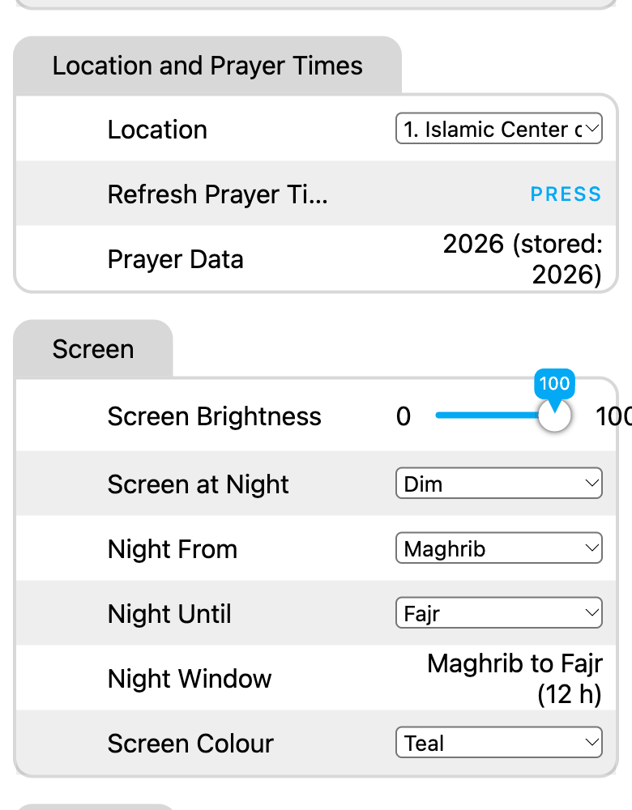
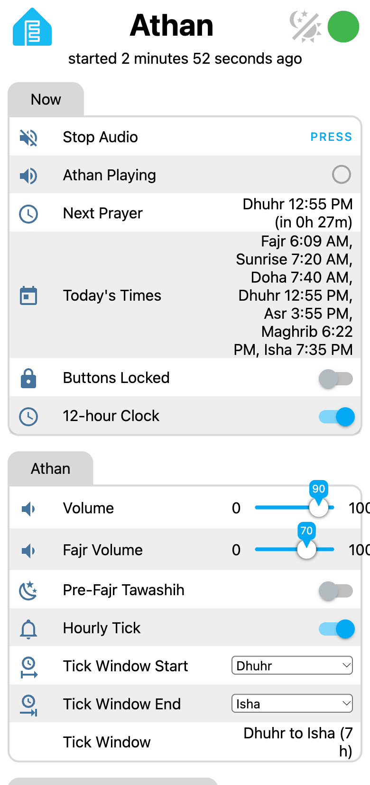
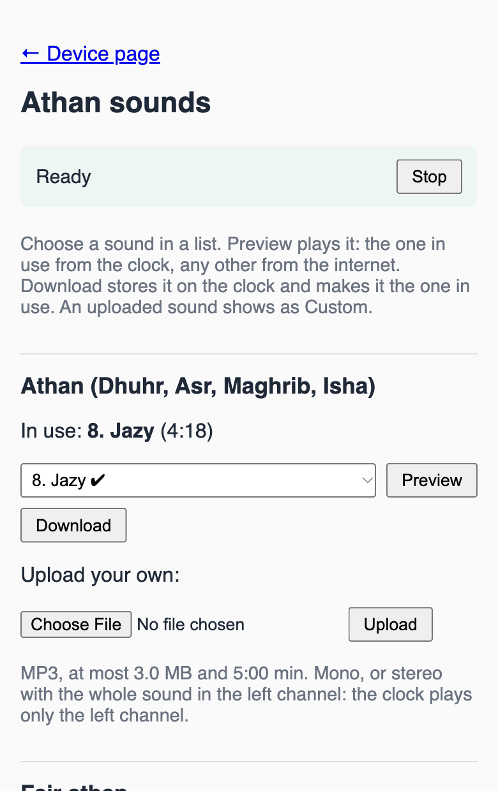

Using the clock
One joystick, one screen and a web page on your phone. Try them here first: the clock below runs the same screens and the same menu as a real one, with your mosque's times.
Try the clock
Or click the screen and use the arrow keys, with Enter for Select.
The clock screen
The screen
Clocks come with one of two screens, a 1.54" colour screen or a small one-colour OLED. Both show the same things.
The colour screen
- At the top: the time with its seconds, and the date. Under the date, the marks below.
- In the middle: a ring that fills from the last prayer to the next one. Inside it: the next prayer, the time left ("1h 29m", "37m", and in the last minute the seconds, "45s") and its time.
- At the bottom: the five prayers. The next one sits in a filled box, easy to find from across a room. When Sunrise or Doha comes first, Dhuhr is only framed. Prayers that have passed are dimmed.
- An athan switched off shows a mute icon above that prayer's name.
- In the last minute before an athan the ring flashes, half a second on and half off, while the time left counts down the seconds. During the athan the ring and the prayer's box turn the athan colour.
- Colours: Gold, Teal (the default), Green, Blue or White, with Screen Colour.
- radioRadio playing, with its slot number (1 to 10). Up stops it.
- upgradeA firmware update is ready to install (see Updates below).
- lockThe buttons are locked.
- wifi_offNo Wi-Fi. The athan keeps working from the stored times.
- historyEstimated times: this year's timetable is not published yet, so the clock uses last year's for the same date, converted for daylight saving (at most about a minute off). It goes away when the real timetable arrives.
The one-colour screen
The time, the marks and the weekday; the date; the five prayers with the next one highlighted; then the next prayer and the time left. A prayer struck through has its athan switched off. A small hollow square at the top right means estimated times, a triangle with a number the radio, an up arrow over a line an update. During the athan the bottom box turns white and says ATHAN TIME.
The joystick
Up, Down, Left, Right, and Select: push it straight in.
| Key | On the clock screen |
|---|---|
| Select | Opens the menu |
| Up | Radio on or off. It plays the station you chose last (its number shows beside the play mark) |
| Down | Relay output on or off |
| Left Right | Volume down or up by 10 %, shown for 2 seconds, of whatever is playing (the Fajr volume during the Fajr athan or the tawashih). They stop at 10 %: to go silent, use the menu or the web page |
While the athan, the tawashih, the tick or a preview plays, Up, Down and Select stop it instead. The radio keeps playing. If you stop the athan, the radio it paused stays off.
A dark screen (Brightness at 0 %, or Screen at Night: Turned off): the first press of any key only lights it, dimly. It stays lit for 2 minutes after your last press, with the seconds counting down in a corner. The athan and the Pre-Fajr Tawashih light it too.
Locked buttons (the menu's Lock Buttons row, handy when children can reach the clock): any key only stops what is playing. To unlock, switch off Buttons Locked on the web page, or unplug the clock and plug it back in while holding Up, Down, Left or Right.
The web page
On a phone or computer on the same Wi-Fi, open athan.local. If it doesn't
open (some phones, Android in particular, can't open .local addresses), use the clock's IP
address from the menu's Info row.
Everything the menu and the keys do can also be done here, except forgetting the Wi-Fi. A change takes effect at once, and the page always shows what the clock is doing. It is grouped:
- Now: Stop Audio, Athan Playing, Next Prayer, Today's Times, Buttons Locked, 12-hour Clock.
- Athan: Volume, Fajr Volume, Pre-Fajr Tawashih, Hourly Tick and its window.
- Athan On/Off per Prayer: a switch for each prayer.
- Sounds: the sounds in use and the link to the sounds page, athan.local/audio.
- Radio and Radio Stations: the ten slots (radio).
- Location and Prayer Times: your mosque, Refresh Prayer Times, and which years are stored.
- Screen: brightness, Screen at Night and its hours, and Screen Colour.
- System: firmware and updates, Restart, the relay, the IP address, the Wi-Fi signal and drops.

Home Assistant finds the clock through its ESPHome integration, with the same controls. The encryption key
it asks for is /A5YakHWYfXLiBWI5Z92v0FWiaMsWbCUCWD41zlLPYk=.


Updates
The clock looks for new firmware when it starts and every day at 3:00. It never installs an update by itself. When a new version is out, a small up arrow appears at the top right of the screen and stays there until you install it.
Install it with Firmware on the web page, the menu's Update row (it shows Install 3.x.y), or Home Assistant, at a time when no prayer is due in the next few minutes: the clock stands still while it downloads, then restarts with the new version. Your settings, sounds and prayer times stay.
Good to know
- Power cuts: the clock keeps its Wi-Fi, settings, sounds and times. Without internet afterwards it has no time until the internet comes back, then carries on by itself.
- Another Wi-Fi network: unplug the clock, hold Select, and plug it back in. It forgets its network and setup starts again.
- Your mosque corrected its timetable: press Refresh Prayer Times on the web page.
- The router keeps dropping the clock: Wi-Fi Drops on the web page lists when and why. Keep the clock a metre or two away from the router, give the 2.4 GHz band its own network name on a fixed channel (1, 6 or 11), and use WPA2 (AES) only. The full list is in the guide.
Everything on this page, in full: Using the clock.